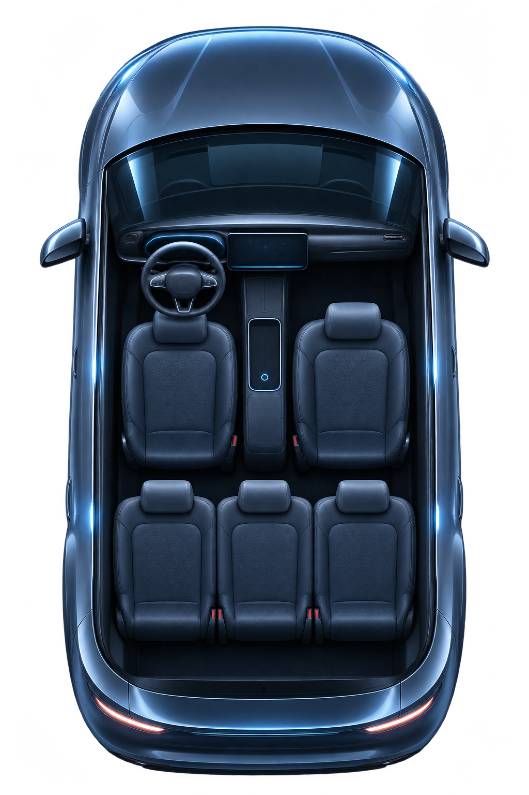

왜 조금 일찍 감속하라는 조언을 받았나요?
차량 속도 변화에서 관찰된 운전 경향을 민준의 최근 기록과 비교했습니다.
이번 운행5회정차 직전 속도 변화
최근 3회1.4회10분당 관찰 빈도
이전 3회2.4회10분당 관찰 빈도
- 앞차와 정차 지점을 조금 일찍 확인해보세요.
- 정차 직전 한 번에 감속하기보다 속도를 나누어 줄여보세요.

세부 정보와 최근 한줄 평을 확인할 사람을 선택하세요.
지난 이동의 흐름과 함께한 사람의 응답을 살펴봐요.
차량 속도 변화에서 관찰된 운전 경향을 민준의 최근 기록과 비교했습니다.
11월 4일 · 38분 · 민준 운전
동승자
해당하는 순간만 선택해 주세요. 없어도 괜찮아요.
서아의 평가가 저장됐어요.